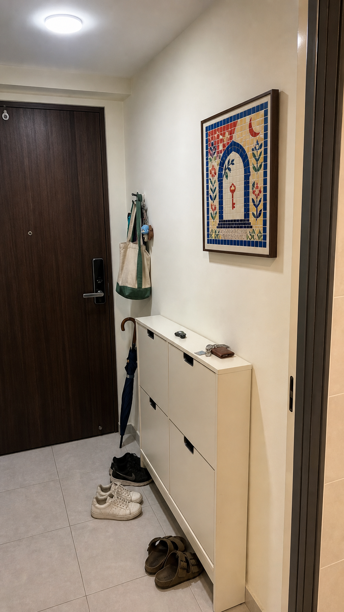

Founder-led by Shin
Solo builder-operator behind the product prototype, TikTok content engine, analytics report, and visual QA system.

Investor brief / updated May 17, 2026
Oysterlab turns a user's current feeling into original artwork, a story card, and a room preview.
Solo builder-operator behind the product prototype, TikTok content engine, analytics report, and visual QA system.
13.6k weekly viewers, 95.4% For You distribution, and post-level demographic reads across service content.
Digital art direction, room keepsake pack, and founder-led direction. Paid conversion test is the next proof point.
Every content test teaches which feeling, room, artwork, and audience segment turns attention into intent.
Current signal
Source: TikTok Studio Analytics API, last 7 days. These are audience-validation numbers, not revenue claims.
Business model
Original image, room preview, download, short story card.
Print file, frame/size guide, before/after image.
Three directions, color/frame guide, personal PDF.
Unit economics

Why Singapore first
Across renter, first-home, SG small-space, desk wall, bedroom, and entry lanes.
Content experiments are logged, reviewed, and recycled into the next test loop.
Target surfaces are used to train distribution context before content production.
Six candidates: keep, correct, extend, and novel-format tests.
Defensibility
Structured intake maps current feelings to roles, texture, palette, room placement, and the action that carries it into daily life.
Tests connect room type, viewer demographic, hook, artwork style, and intent signal.
Art-style passports, no-reuse rules, continuity checks, and visual diversity QA prevent generic AI decor.
Founder
Building Oysterlab end-to-end: strategy, creative automation, TikTok operations, demographic reporting, service prototype, and investor pages.
Investor FAQ
No. AI can assist production, but the product is the direction system: art direction, story, print guidance, and room placement.
Paid conversion from TikTok traffic, AOV mix across $9/$19/$49, and repeat or gift purchase intent.
Singapore is the strongest early signal and a high-income small-space market. The content remains English-first for expansion.
Launch founding directions, normalize unit economics, automate the intake-to-preview flow, and validate the strongest room/feeling segments.
Productization, paid validation, creator acquisition tests, data pipeline, and a premium delivery layer.
Primary action
Temporary routing uses GitHub until a Cal.com or founder email link is supplied.